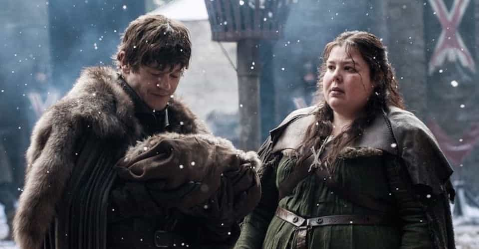
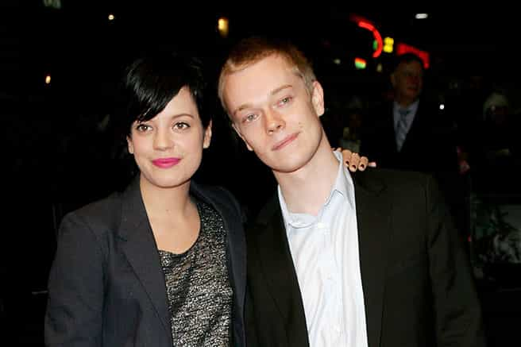
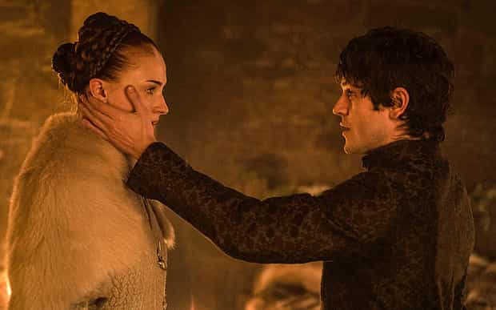

< < < Back
Feminist Senator Demands End To Filmed Rape Scenes—But Dogs Eating Babies Is Okay – Return Of Kings
After the Sansa Stark rape scene in Season 5 of Game of Thrones, über-feminist Senator Claire McCaskill and other feminist head honchos went into overdrive and lambasted the show’s producers for featuring the off-camera act. Now, in only the second episode of Season 6, a baby has been mauled to death by his brother’s hunting dogs. Moreover, the brother deliberately let the hounds eat his stepmother and the infant. What was McCaskill’s response? Absolutely nothing.
If ever we needed a single piece of evidence about the brain-dead and narcissistic selectivity of feminist media complaints, here we have it. McCaskill sought every microphone and media outlet she could find when she promised to boycott Game of Thrones after Sansa’s rape. Mind you, the threat came into 46 episodes into the series, after nearly two days’ worth of graphic television footage.
All of it has been replete with blood, guts, penis-severing, people being skinned alive and immolated, and other niceties. Unsurprisingly, when tiny girl Shireen Baratheon was burned alive a few episodes after Ramsay Bolton violated Sansa, McCaskill did not rear her geriatric head to complain. This is despite her having every interest in keeping abreast of the show’s developments, just so she could complain about sexual assault again.

Ramsay Bolton is about to take his baby brother and stepmother to the kennels, where they will be ripped in half by giant-sized dogs.
To be blunt, feminists believe that nothing, whether it be run-of-the-mill murder, the bloody butchering of children, or gratuitous torture, comes anywhere close to the victimhood associated with rape. Even the mere sight of a nude woman on television is equated with “rape culture,” all while other unbelievably cruel acts, like countless ones on Game of Thrones, are ignored. The worst part of all is that Game of Thrones‘ pussy-whipped producers, David Benioff and D. B. Weiss, caved in to all the feminist shrieking. Far from only promising to not have future rape scenes, they changed already written scripts to accommodate the SJWs.
Where did everything go so wrong? When did the fictional but painful murder of an infant matter one thousand times less than a pretend rape?
Enter the very cucked Alfie Allen

Alfie Allen, celebrity cuck, pictured with a member of the gender that owns him.
One could expect that singer Lily Allen’s brother would be a little ball-less, yet the actor playing Theon Greyjoy went above and beyond in supporting the tripe spouted by Claire McCaskill and others. His own character had had his penis cut off but, no, the worst moment of his time working on the show was the Sansa Stark rape scene!
Continuing the plain sad trend of male actors doing everything they can to be utterly obsequious towards feminism, Alfie Allen waxed lyrical about actress Sophie Turner’s “bravery” in filming the made-up sexual assault. He gave no such praise for Pedro Pascal sucking it up and acting out his character Oberyn Martell having his eyes gouged out and head crushed. We should not keep any hope that Allen comes out with half-tears about the violent death of Ramsay Bolton’s baby brother.
Combined with the pathetic surrender of the producers, Allen’s sycophancy illustrates that sexual assault is the only truly no-go zone in modern television and film. Only obvious exceptions like Law and Order: SVU, which support the claimed existence of “rape culture,” are allowed. Even if we dispense with the argument of permitting very wide creative expression, a refusal to feature rape scenes can only be justified if equally or more repulsive acts are also quarantined from television shows and films. For Allen’s position to make any sense, he should be speaking out more stridently still on the fate that befell Theon Greyjoy. At least Sansa Stark so far has her entire body together.
At best, Allen, Benioff, Weiss, and Claire McCaskill have given a massive middle finger to most real-life victims of serious violence. If you take what they say at face value, only those who have been through sexual assault can ever be “triggered” and “traumatised” by what happens on television or in film. Had your skull smashed or fractured during an unprovoked attack and then see the same thing happen on Game of Thrones? Grow up, princess, it’s just a show! Gone through the murder of a family member? Get over it, son, it’s fiction! These are the patronizing messages SJWs and their celebrity slaves are making abundantly clear.
You should feel no shame whatsoever in buying quality films and watching television shows that have rape scenes

Either get pissed off at everything violent or shut the hell up.
If the acting, story and visuals are good, purchase or view any movie or series you wish, either ones with rape or without it. In fact, you should arguably buy items from the first category more eagerly than from the latter one, just as you might buy books and other material because the creator stands for free speech. Films and television series should be consistent in showing or not showing certain forms of violence. The alternative is bizarrely cordoning off certain pet topics of feminists and others from being portrayed onscreen.
Provided you are paying for a quality violent film or television show, or at least recommending it to your friends, you are promoting free and reasonable artistic expression. Until such time as society has a common sense approach to acceptable versus unacceptable violence, we must actively support realism in acted-out stories, most of all in narratives that parallel history itself. Game of Thrones is nothing but a loose representation of medieval society, remember.
In the meantime, Claire McCaskill should get off her high horse. She is both too fat for the horse and undeserving of any platform for spitting out her putrid brand of politics.
Read More: Feminists Manufacture Rape Straw Man Against “Game Of Thrones”